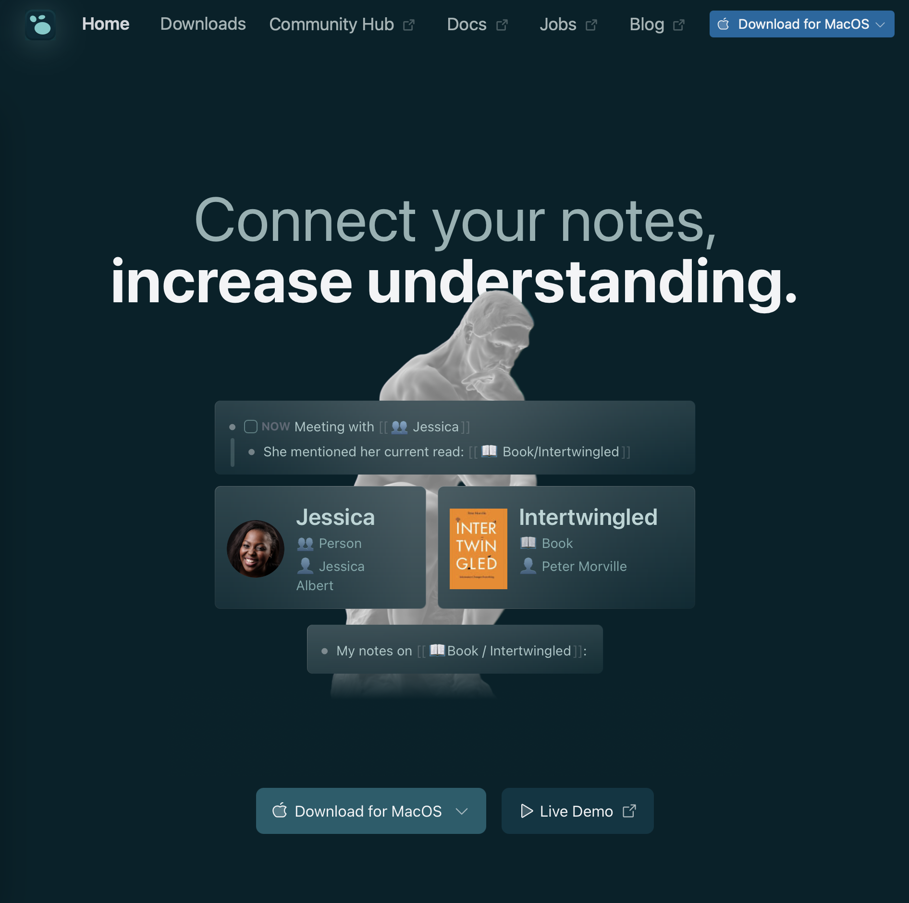

Logseq

I'm super intrigued by knowledge management systems. I felt like I watched a ton of videos about Obsidian, and overwhelmed myself with everything it can do, and how flexible it is. I'm comfortable Logseq would be another great tool - I just can't quite yet talk myself into taking the plunge in either.
- Prior: HTMLForPeople.com
- Next: OpenSCAD Cheatsheet